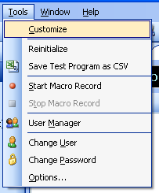
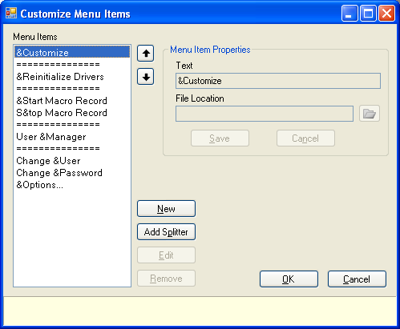

The Tools and Help menus are customizable to allow the user to add shortcuts to other files and applications. To access the Customize Menu Items dialog, select the "Customize" menu item from either the Tools or the Help menu.

The Menu Items list in the Customize Menu Items displays the menu items that are currently in the menu.

Adding a New Menu Item
Follow these steps to add a new menu item:
Editing a Menu Item
To edit an existing menu item, select the item in the Menu Items list and click the Edit button. Make any changes in the Text and File Location fields and click Save.
Note: Most of the default menu items that are installed with the ActivATE™ application are not editable, and the Edit button will be disabled when they are selected in the Menu Items list. The user may only change the location of these items within the list (use the up and down arrow buttons).
Removing a Menu Item
To remove an existing menu item, select the item in the Menu Items list and click the Remove button.
Note: Most of the default menu items that are installed with the ActivATE™ application can not be removed, and the Remove button will be disabled when they are selected in the Menu Items list.
Astronics Test Systems
Last updated on 12/5/07 by L. Anhalt